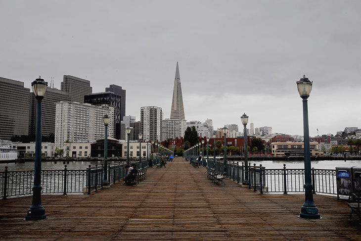
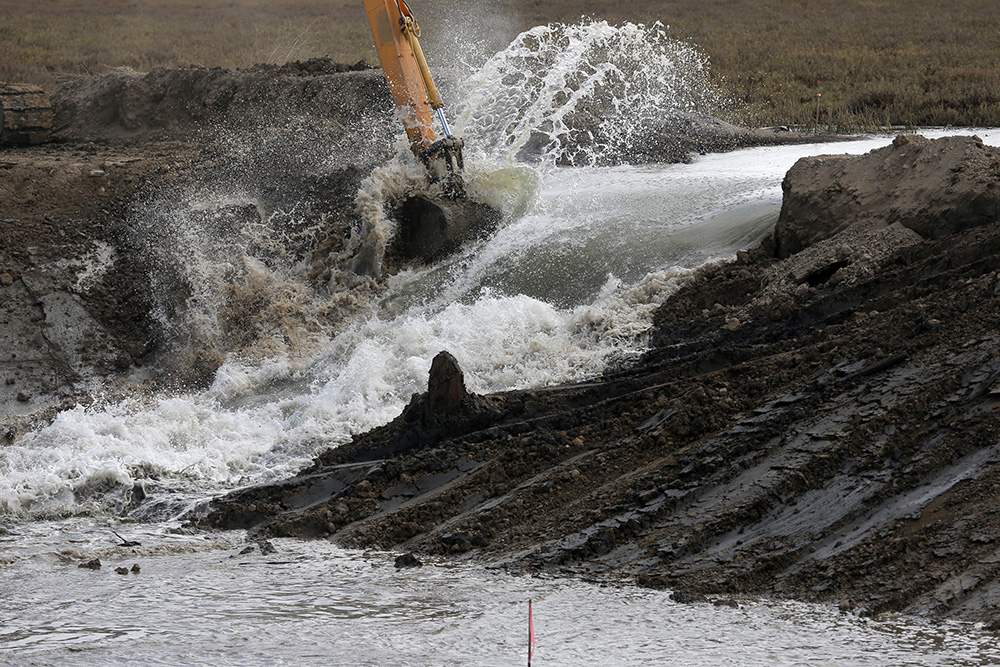

For the past half-century, our region has defined the challenge of San Francisco Bay in simple terms: Make sure it doesn’t shrink. Stop new buildings, build parks and trails, restore a patch of wetland here and there along the edge. Beyond that, leave things pretty much as they are.
Now things are getting more complicated. And the next few years will determine whether or not we’re up to the task of rethinking our shorelines in the era of sea level rise.
An abundance of scientific studies say the bay’s average tide could climb as much as 66 inches by 2100 will need to make sure we have fresh accurate number, with most of the change coming in the decades after 2050 — an inexorable shift that endangers low-lying neighborhoods and public infrastructure as well as the fish, birds and wildlife that need tidal flats to survive. Add the dangers posed by heavy storms at high tide, and the projections translate to maps that show much of our bayside land as vulnerable to periodic inundation. Where the San Mateo Bridge touches down, for instance. Large swaths of the island community of Alameda and all of San Francisco International Airport. The Embarcadero promenade and the green turf of AT&T Park.
Annie Kohut Frankel, of the California Coastal Commission, holds an informational sign to educate the public about king tides at Pier 14 along the Embarcadero in San Francisco, Calif. on Tuesday, Nov. 24, 2015. King tide conditions are causing higher than usual water levels.
Photo: Paul Chinn, The Chronicle
The good news is, the region has a narrow but real window of time to prepare for what might lie ahead. In some areas the solution will involve marshes that double as environmentally friendly buffer zones. In others, where people already live and work close to the shore, smart development can help protect what’s behind it while also addressing other regional concerns, such as the lack of housing.
Not only that, in the year ahead there are genuine opportunities to reset the dial.
Within San Francisco, the port is tackling the first update to its waterfront plan in nearly 20 years. The decisions to be made will affect 7.5 miles of shoreline, from ever-popular Fisherman’s Wharf to decrepit piers far off the tourist map. The challenge is to push beyond the hard-line positions that have framed past waterfront debates and create new connections to the water that we’ll be proud to hand off to our children.
At a regional level, residents of the nine counties surrounding the bay will vote in June on a $500 million parcel tax over 20 years that, if approved, could provide the resources to help restore at least 30,000 acres of marshes — an unprecedented step that has the potential to improve the health of the bay and provide a buffer against the extremes of sea level rise, particularly in the north and south bays.
One advantage is that we aren’t starting from scratch. The regional quest to protect and replenish the bay has produced success stories both large and small. From the rebirth of diked farmland in the North Bay as scenic marshes teeming with life to San Francisco, where AT&T Park, the Ferry Building and the transformation of an unsafe warehouse at Pier 15 into the Exploratorium science museum has turned the once-dilapidated Embarcadero into one of the city’s most popular destinations.
Those triumphs show the potential that exists — and the time and expense that make such turnarounds too few and far between. San Francisco and the region will need to get serious about the slow-moving threat that lies ahead. Otherwise, the larger forces of nature might swamp our best intentions once and for all.
San Francisco’s shoreline has never been static.
Shallow bays were filled with ship hulls and nearby hillsides to create building sites after the discovery of gold in 1848√, as a ramshackle town became the West Coast’s largest city. Wooden piers lined the Embarcadero, were pulled down and rebuilt at larger scale. A steel mill sprouted at the foot of Potrero Hill, and the U.S. Navy pushed into the bay at Hunters Point to create a base that during World War II employed as many as 18,000 people.
Aerial view of the Port of San Francisco on the San Francisco waterfront Around the middle 1920’s.
Handout from San Francisco Port Authority
Aerial view of Pier 35 as two ships tie up, for the Matson Lines of the Port of San Francisco on the San Francisco waterfront. Photo dated 09/13/1967.
Handout from San Francisco Port Authority
Aerial shot of the San Francisco Waterfront and Harbor looking south with the Ferry building and Bay Bridge in the photo August 18, 1938.
Photographer unknown
Then came the decline of the industrial waterfront and the erection of the Embarcadero Freeway. In 1968, the state handed off the Port of San Francisco and its 7.5 mile shoreline to the city and its residents. The civic priority ever since has been to preserve what’s left of the historic waterfront — not just piers but fishing and maritime businesses — while adding walkways and public spaces.
This balancing act can be seen yet again as the port embarks a makeover of its waterfront land-use plan. That document dates to 1997, spurred by a 1990 voter initiative that banned hotels on city piers and put a halt to non-maritime development until such a plan was approved.
Since then more than $1.6 billion has been invested on port-owned land running from Fisherman’s Wharf south to India Basin, according to a 2014 study that proclaimed “San Francisco is more united with its waterfront than it has ever been,” with “industry, commerce and residential neighbors all existing in a harmony of contrasts.”
But accentuating the positive glosses over the strained reality of a waterfront where concrete companies do business in the shadow of long-idle gantry cranes, and where the seawall along the Embarcadero that separates the bay from the Financial District could require at least $2 billion in upgrades within the next decade.
The sea wall in need of repairs along the Embarcadero between Howard and Mission Streets in San Francisco, California, on Thurs. May 5, 2016.
Photo: Michael Macor, The Chronicle
Looking out the windows of Musee Mecanique at Pier 45 along Fisherman's Wharf in San Francisco, California, on Thurs. May 5, 2016.
Photo: Michael Macor, The Chronicle
Passengers disembark a ferry boat behind the Ferry Building along the Embarcadero in San Francisco, California, on Thurs. May 5, 2016.
Photo: Michael Macor, The Chronicle
Passengers board a ferry boat behind the Ferry Building along the Embarcadero in San Francisco, California, on Thurs. May 5, 2016.
Photo: Michael Macor, The Chronicle

Dilapidated piers along the Embarcadero near the Bay Bridge in San Francisco, California on Wed. April 20, 2016.
Photo: Michael Macor, The Chronicle
Development-wary neighbors, meanwhile, responded to such proposals as the Golden State Warriors’ wish to build an arena on piers south of the Bay Bridge with a successful 2014 ballot initiative that requires any change to height limits within port boundaries to be OK’d by city voters.
Taking a fresh look at the port’s future makes sense — the rebirth of the Embarcadero in the past 20 years has connected downtown to the bay like never before. There’s also a laudable effort to reach beyond the usual suspects with a 32√-member advisory committee that includes members from all 11 supervisorial districts√. But the initial target of completing a draft for the update this fall has faded. It could be the summer of 2017√ before recommendations emerge.
Sea level rise around the bay
Current scientific projections call for average high tides within San Francisco Bay to rise by as much as 62 inches between now and 2100 (and not stop then). Whatever the exact level, the combination of rising sea levels and more extreme weather will pose threats around our shores, in a variety of ways. Here are six – and the list doesn’t include such obvious targets as San Francisco and Oakland airport, both of which are built partly on landfill, and the low spots where bridges touch ground.
Sea level rise around the bay
Current scientific projections call for average high tides within San Francisco Bay to rise by as much as 62 inches between now and 2100 (and not stop then). Whatever the exact level, the combination of rising sea levels and more extreme weather will pose threats around our shores, in a variety of ways. Here are six – and the list doesn’t include such obvious targets as San Francisco and Oakland airport, both of which are built partly on landfill, and the low spots where bridges touch ground.
Select different map locations to see how sea level rise will impact different areas around the bay.
Click on any icon to begin.
These delays are in keeping for a city that’s great at studying complicated and controversial topics, but not so great at moving from study to action — especially when the topic is one that isn’t accompanied by theatrical protests, à la the spread of tech buses or the plight of renters facing eviction.
The extent to which process dilutes urgency can be seen in the release in March√ of a 12-department “sea level rise action plan.” Mayor Ed Lee deserves credit for launching the effort, but the document arrived five months later than promised. The main thrust? To map out how to devise specific strategies for adapting the city’s shoreline and infrastructure to the likelihood of rising tides and harsher storms — strategies that aren’t expected to be completed for at least another two years.
Similarly, San Francisco planners are eager to hold a regional “design challenge” to craft imaginative strategies for regional adaptation, an initiative along the lines of New York’s Rebuild by Design effort after 2012’s Hurricane Sandy. It was supposed to kick off last fall. Now, the target to get started is fall of 2016.
The thing is, the best way to prepare for a rising sea level’s slow-motion threats to infrastructure is to do so early. And in today’s Bay Area, that’s easier said than done.
When community dignitaries and government officials gathered last October to watch an excavator claw a break in a levee along San Pablo Bay, the mood was exultant.
They cheered as water gushed through with fast-spreading force, an orchestrated flood that with time should turn 1,000 acres of ranchland near Highway 37 back into a tidal marsh that rustles with cord grass, providing habitat for such endangered species as the salt marsh harvest mouse and the Ridgway’s rail, a hen-sized shorebird√.

Crews breach a levee near Sonoma, California, on Sunday, Oct. 25, 2015.
Photo: Connor Radnovich, The Chronicle
CAPTION
Photo: PERSON, The Chronicle
A group of people watching the levee breach hold seed balls they will throw into the new marsh near Sonoma, California, on Sunday, Oct. 25, 2015.
Photo: Connor Radnovich, The Chronicle
trimmable: With celebration came relief, and no wonder: 10 years had passed between the purchase of the former hay ranch by the Sonoma Land Trust and the breach of the levee. The $18 million to pay for the restoration included grants from 12 different sources. The two years of work to ready the site — using bulldozers to shape now-submerged mounds that will allow plants to take root, for instance — came after seven years of environmental studies√.
An aerial images taken of the Sears Point Restoration Project on San Pablo Bay in Sonoma County.
Photo courtesy of Stephen Joseph, Sonoma Land Trust
The scene at Sears Point Ranch√ underscores the enormity of what lies ahead if we’re to create — or re-create — the TK,TKT acres of additional wetlands that scientists say we need for the bay to absorb the worst impacts of sea level rise between now and 2100. This would bring the amount of bay marshes up to 100,000 acres; by comparison, just TK,TKT acres have been restored in the past 15 years, when the 100,000 acre target was was set.
For this to happen, the Bay Area must overcome a protective culture that favors local control over regional action and values time-consuming reviews over nimble planning efforts.
Botanist, Rhiannon Korhummel, (left) and Biologist Stephanie Freed, with WRA Environmental Consultants assess the quality of the wetlands habitat neat the Sears Point Restoration site on the edge of San Pablo Bay in Novato, California on Tues. April 19, 2016.
That culture was born of necessity in the 1960s, when ordinary citizens took action to protect regional treasures that were threatened. And one of the first major victories was in 1965, when the Bay Conservation and Development Commission was created in response to a crusade launched by three Berkeley women alarmed by the cavalier way that Bay Area cities and counties saw shallow waters as little more than development parcels, or convenient sites for their garbage dumps.
Sylvia McLaughlin (center) stands with Esther Gulick (left) and Kay Kerr (center) while the three Save the Bay co-founders attend a Senate hearing on the BCDC in 1969.
Photo courtesy of Sylvia McLaughlin
The legislative mandate to the BCDC was straightforward: “Protection of the bay as a great natural resource ... with a minimum of bay filling.” The autonomous agency has jurisidiction over not only the bay, but also the 100-foot-deep band of shoreline along its edge. And by any measure, the agency has been successful: the bay is nearly 19,000 acres larger than it was a half-century ago.
These days, the BCDC concentrates more on the likelihood that the bay will increase, not decrease, in size.
As far back as 2007 the agency turned heads with highly publicized maps showing how our shorelines would be altered by a 55-inch rise in sea levels. Two years later it held a design competition that attracted 131 entries from 18 countries.
But when the BCDC sought to amend its Bay Plan to take climate change into account, the pushback was so severe that the changes finally approved in 2011 were modest. And one of its most important elements — a call for “a regional sea level rise adaptation strategy” — was never followed up on by other government agencies.
This year it’s trying to nudge things along in a different way, with a series of workshops aimed at making a case for the virtues of collaboration across city, county and jurisdictional boundaries.
“We need to find better ways to work together more intelligently and effectively, and we must do that soon,” Zach Wasserman, who chairs the BCDC, told the Feb. 19 gathering of about 75 representatives from various government bodies and advocacy groups. Mindful of politics, he also stressed there was no secret plan for a power grab: “We should not have one single authority or agency in control.”
Realistically, though, something of that sort is needed — if not to dictate, then to steer projects through the bureaucratic maze.
The Sears Point Ranch saga shows this well. There was no real opposition, yet it required permits from seven county, state and federal agencies. The effort paid off because a committed nonprofit with deep pockets had the persistence to make the project happen.
How many permit agencies does it take to sign off on a marsh?
In order to enact any kind of progress on the waterfront, countless agencies must approve action. Click on the figures to see who is involved in the bureaucratic maze.
If Prop. AA passes in June, the estimated annual stream of $25 million from the nine-county parcel tax will make it easier to cobble together funds. The legal thicket will remain, the overlap of regulators that pass judgement based on their own tightly defined priorities.
“The complexity is a big part of why it takes so long,” said Letitia Grenier, a senior scientist with the San Francisco Estuary Institute√. “There are so many variables to pull together.”
That would be fine if time was not an issue. But it is. Scientists at the institute emphasize that marsh plants require a decade or more to take root and spread so that as the average tide rises, they can adapt and move inland (assuming there’s space to do this). This means a rate of restoration exponentially more rapid than what we’ve seen so far this century.
“The problem now is analagous to the effort to stop bayfill 50 years ago, but there’s a balkanization of authority,” said David Lewis, executive director of Save the Bay, the organization founded in 1961√ to, in a sense, reverse the political tide. “We need to change the way things happen so that decision-making is concentrated.”
While local models of how such a system might work are obscure, they do exist.
For instance, any application to dredge and dispose of bay sediment goes through a single hearing of an interagency group that includes eight government agencies. The focus is narrow — muck cleared from navigation channels — but the players range from the BCDC to the U.S. Army Corps of Engineers. In other words, it can be done.
Reform of this sort isn’t nearly as easy as going into battle to stop something. The long-term implications, though, are likely to be far more profound.
“The scary thing is that honestly, we figured we had two generations or more to deal with this,” said Joshua Stevens, the lead scientist at the estuary institute. “We don’t. there isn’t that time.”
3rd graders including Harry McNulty with a Mugwort plant from San Francisco Day School join Point Blue, which is a program of students and teachers restoring a watershed, as they plant native shrubs along the San Pablo Bay Wildlife Refuge on the edge of San Pablo Bay in Novato, California on Tues. April 19, 2016.
Photo: Michael Macor, The Chronicle
Fifty years ago, the region’s big ecological question was how to “save” the bay. The challenge ahead is to accommodate its expansion, and to do so in a way that won’t put our human resources and our ecology at risk.
That’s because things today aren’t as simple as when Bay Area residents pressured their leaders to close shoreline garbage dumps and San Franciscans were faced with development schemes that included, believe it or not, a 1969√ proposal for a car dealership on piers along the Embarcadero.
There’s complexity in the environmental pressures facing the bay from sea level rise, and complexity in the rival demands for what land is left along San Francisco’s waterfront. Complexity in the range of responses that will be required — some areas will need marshes, others might need walls — and complexity in the bureaucratic maze facing even a project with widespread support.
Water from the bay crashes onto the sidewalk at Pier 14 along the Embarcadero at high tide in San Francisco, Calif. on Tuesday, Nov. 24, 2015. King tide conditions are causing higher than usual water levels.
Photo: Paul Chinn, The Chronicle
Today’s Bay Area doesn’t handle complexity well — and that needs to change.
Within the city, planning for the port’s future and the larger infrastructure needs to have the reality of sea level rise at its core. This means getting beyond the notion that the waterfront as some nostalgic place apart, rather than the culmination of a robust city of more than 900,000 people.
As for the region, it’s time to reshape how regulatory decisions regarding the shoreline are made. Maybe there shouldn’t be a single agency telling other governments what to do. But if the approval processes can be consolidated when the topic is related to sea level rise, so things can move forward in predictable and orderly ways.
The fact is, San Francisco Bay is the body of water that defines our region more than any other natural feature. It survives as a compelling and environmentally rich feature because Bay Area residents took action in the 1960s. If we’re going to protect that legacy, we need to break the mold again.